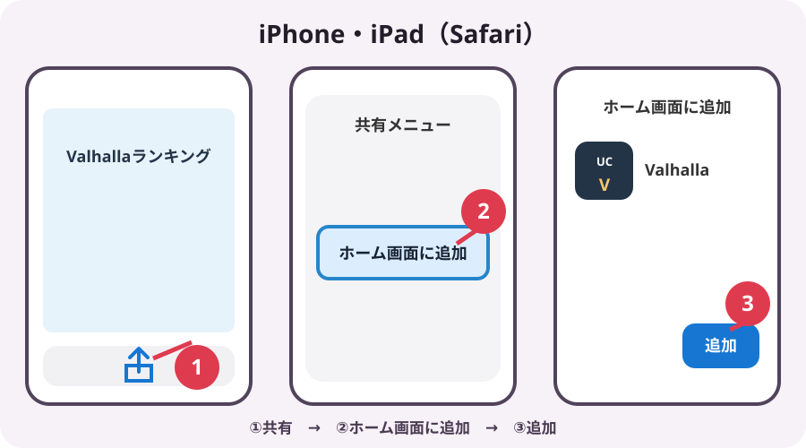
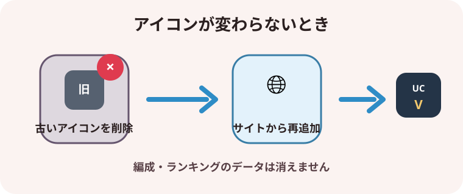

Safariを使って、Valhallaランキングをホーム画面へ追加します。
- Safariでこのランキングを開きます。
- 画面下部の共有ボタン（四角から上向き矢印）を押します。
- メニューを下へ動かし、「ホーム画面に追加」を押します。
- 名前を確認して、右上の「追加」を押します。
- ホーム画面のValhallaアイコンから起動します。

アイコンが更新されない場合
ホーム画面の古いアイコンを削除してから、上の手順でもう一度追加してください。登録済みの編成やランキングデータは消えません。
